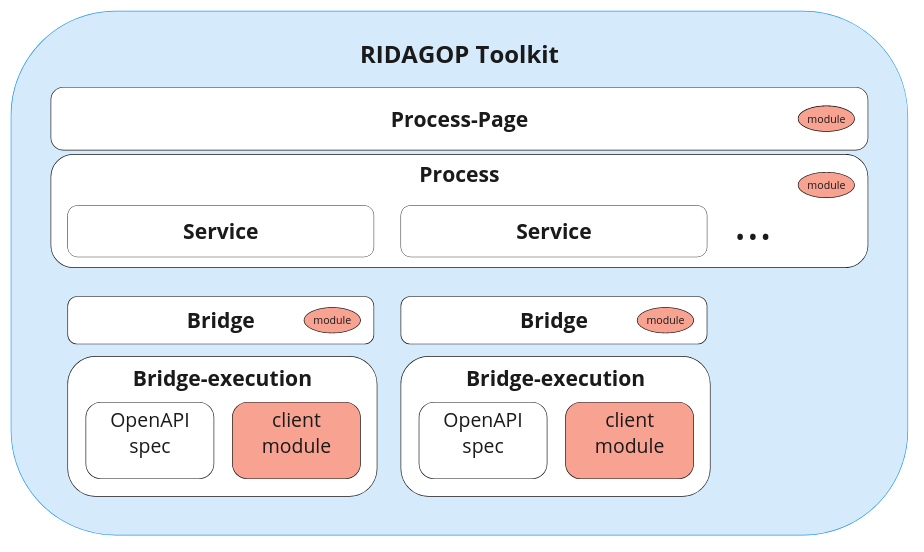

Technical overview#
The IDS toolkit is a simple javascript module that can be integrated into any website.
When the module is loaded on a webpage, a process-page can be initiated by calling the global _ids_init_ function,
with the url of the process-page description file as argument.
The Process-Page is a json file that describes the process-page. It links (or includes) the process, which describe the services of a process, which contain activities.
The essential parts that define what a process can do, and how a user can interact with it, are the activities and the ui-elements of services.
The toolkit provides a set of json-schema files, that can be used to validate the process-page, process, bridge. There is also a json-schema file that integrates all of them and provides validation for an integrated proces-page description file. The json-schemas are described here in more detail in the Schemas section.

Following components of a complete process can be separated into different files json:
- Process-Page
- Process
- Bridge
- Bridge-execution (one of the following)
- OpenAPI-specification
- client-module (javascript module)
However, it also possible to combine all components into one file (except the client-module).
In addition, there can be separate javascript modules, that be referenced by specific components:
- Process-Page module
- Process module
- Bridge module
These modules can be used to define custom functions, that can be used for activities which modify some data before or after interacting with a service. When a function is defined in multiple modules, the one of the most upper one module is used.
Further detail about the components can be found in their respective API documentation.
View modes#
Process pages can be displayed in two different view modes. Either the page can be completely generated, meaning all input html elements will be generated (build-mode) in map-mode, where the defined interaction elements will be mapped to existing html on the page. Read more about the 2 view modes in the View Modes section.
Process#
A process defines a set of services, which describe how the user can interact with external services.
A service, which has a bridge defines a set of activities and ui-elements that can be used to interact with the service.
Next to the services the process can also define a common object, activities and ui-elements.
This is particular useful, when activities, need to call activities from other services (in subActivities).
TODO...
Read here full details of the process schema.
Services#
Services are defined within a process and represent the interactions with external services that is used in the process. Processes need to be defined in both the process-page and the process instance. However the main part of a services, which are the definitions of the activities and ui-elements, are defined in the process.
Most importantly the process-page definition of a service can (full schema):
- define a new bridge
- define new autostart activities (<- ??? REF)
- specify to show/hide sections of the UI
- Define additional service-wide parameters
- define additional text-fields and buttons (that can trigger activities)
The process instance defines the crucial parts of a service, which are (full schema):
- The bridge
- activities
- autostart activities
- sequences
- service wide parameters
UI-Elements#
The UI-Elements are defined per service. There are five types of UI-Elements that can be defined, which can be used for activities:
- Input fields: For text input
- Buttons: Buttons can be used to trigger activities
- Selects: For selecting a value from a list
- Checkboxes: To select from a boolean option
- File-inputs: To load files that can be used as input for activities
See the UI-Elements section for more details.
Activities#
Activities are defined in the process and describe the interaction with a service. Activities are referring to some execution, which is defined in the bridge of the service.
Activity execution#
Activities must either reference a bridgeCapability or moduleFunction. A bridgeCapability is a reference to a
bridge, which is defined in the process. A moduleFunction is a reference to a capability of the bridge of the service,
while the bridge is defined in the process. The moduleFunction can be used to call a function of the bridge, which is
defined in the bridge module. The bridge module is defined in the modules of the process-page or process.
Required activities#
Activities can refer to other activities (of the same service) that need to be executed before, this activity can be executed. This is in order to guarantee that some data, that is required by an activity are loaded/processed (by the required activities).
Activity parameter#
Activities generally require some parameters, which are the parameters of the execution of the activity. The parameter description defines where the values of the parameters are coming from. The following parameter sources are possible:
- Parent
- Previous
- Field
- QueryParam
- Constant
- FileInput
- Store
- Generate
- Dynamic
Preprocess execution#
It is also possible to refer to a module-function that is executed before the activity is executed.
The preprocess activity takes the same parameters as the actual activity in form of a json-object (keys are parameter
names) and can return json objects, where every key overwrites the parameter passed to the actual activity.
Preprocess can also throw Errors, with the cause cancel, in order to cancel the activity execution.
Handling activity results#
Storing results#
The results of an activity can be stored in order to use them in other activities. The result can be stored in three different contexts, which defines, which other activities can access them. These contexts are:
- Process: The result can be accessed by all activities of the process
- Service: The result can be accessed by all activities of the service
- Activity: The result can be accessed by sub-activities
Special results handling#
Besides storing the results, there are also some special results handling options:
Html Output#
The result of of an activity can be some HTML, which can be displayed in the UI.
For generated UIs there is a standard output section for each service, in that case, the property resultAsOutputHtml
just needs to be true.
For mapped UIs, the property resultAsOutputHtml should specify a string, which should be the id of the html
element, where the result should be displayed.
Dynamic UI Elements#
The result of an activity can also be used to dynamically generate UI elements. The result of the activity should be a
json-object that has the same structure of service uis (schema: Process Service-UI)
The Ui-elements are added the Html-Element with the id {service.name}_dyn_ui.
Sub-activities#
An activity can also define sub-activities. These sub-activities are executed after the activity main (parentActivity)
is executed.
Bridge#
Each service requires a bridge, which defines how the activities are executed. There are two basic types of bridges:
- OpenAPI: The bridge is defined by an OpenAPI specification. The activities are executed by calling the endpoints of the OpenAPI specification. Learn more about OpenAPI at openapi.org
- Client-Module: The bridge is defined by a javascript module, which defines functions that can be called by the activities.